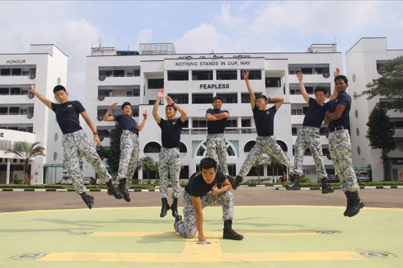

Brainhack CDDC
Cyber Defenders Discovery Camp

I was part of the management committee organizing CDDC 2022. It was a fun experience to be help organize and plan a Cyber Capture The Flag event.
Cyber Defenders Discovery Camp
I was part of the management committee organizing CDDC 2022. It was a fun experience to be help organize and plan a Cyber Capture The Flag event.
Devil's Whisper

Devil's Whisper is a BrainHack 2021 Showcase to raise awareness on audio Adversarial Attacks on smartphones and smart home devices.
YaleNUS Datathon

We created a website to tell a story and show our visualizations, and won first place in the Data Science category! Our theme was Attributing Responsibility to stakeholders on different levels.
Part Time Internship

I worked with a team to create a machine learning model to predict patient readmission, and I am currently working on a text analysis project on to extract important Colonoscopy data, and also a project to generate synthetic data to be made public.
Independent Study Module

I worked together with a Medical Student to conduct research on NUH data to find out why married women take a large proportion of the number of women who are aborting.
Web Development Project

I created a website to market luxury designer furniture. After making numerous websites, my efficiency and design has improved tremendously, and I am able to complete the project with an estimated 24 work hours.
Web Development Project

Worked with another student to create a QR Scanner Web Application used to take attendance for various events in College of Alice and Peter Tan. Events included Masters Tea, Welcome Dinner, CAPTISS.
Web Development Project

I created a website to market unique handcrafted bags - No 2 Bags are ever the same. Bags by Samarkyra's vision : "To achieve the end result of creating employment for the minority and marginalised."
Summer Project & Module

Orbital is the School of Computing’s 1st year summer self-directed, independent work course. My partner, Jasmine and I, worked with a group of Pharmacist students to create a healthcare web application.
Summer Internship

Over the summer, I did an internship at a marketing consulting firm as a Web Developer. I developed 4 websites for different companies and worked with other interns to develop marketing strategies.
National Service

I served my National Service in the Naval Diving Unit. As a Team Commander, I lead a team of divers to carry out missions, and served as Operations IC and Logistics IC.